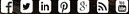

GRAND THEFT AUTO
POPULAR GAME WORLDWIDE
GRAND THEFT AUTO
POPULAR GAME WORLDWIDE

The open, non-linear environment allows the player to explore and choose how they wish to play the game. Although storyline missions are necessary to progress through the game and unlock certain cities and content, they are not required as the player can complete them at their own leisure. When not taking on a storyline mission, the player can freely -roam and look around the cities of San Andreas, eat in restaurants, or cause havoc by attacking people and causing destruction. Creating havoc can attract unwanted and potentially fatal attention from the authorities. The more chaos caused, the stronger the response: police will handle "minor" infractions (attacking pedestrians, pointing guns at people, stealing vehicles, manslaughter, etc.), whereas SWAT teams, the FBI, and the military respond to higher wanted levels.
Battles with enemy gangs are prompted whenever the player ventures into enemy territory and kills at least three gang members. If the player then survives three waves of enemies, the territory will be won and fellow gang members will begin wandering the streets of these areas. The more territory owned by the player, the more money that will be generated. Occasionally, the player's territory will come under attack from enemy gangs and defeating them will be necessary to retain these areas. Once all marked territories are claimed from one of the two hostile gangs for the protagonist's gang, the opposing gang can no longer attack. The player takes control of all the territories!
The main character is a member of the Grove Street Families street gang, a set of a gang that also includes the initially- hostile Temple Drive and Seville Boulevard Families. The two main rival gangs are the Ballas and Los Santos Vagos, both based out of Los Santos. The Varrios Los Aztecas also operate in Los Santos. The main gangs of San Fierro are the San Fierro Rifa, led by T-Bone Mendez; the Da Nang Boys, a Vietnamese gang; and the San Fierro Triads, whose leader Wu Zi Mu forms an alliance with Carl. In Las Venturas, the only gangs are the Triads and the Italian Mafia The "Loco Syndicate" appears in the San Fierro mission chain, essentially made up of T-Bone Mendez's Rifa gangsters, Mike Toreno and a pimp Jizzy B.The Russian Mafia makes a few small appearances in the storyline.
About this page Browse Links
Terms & Conditions Privacy Policy Contact Us Disclaimer
Copyright@Rockstargames.com.All Rights Reserved
